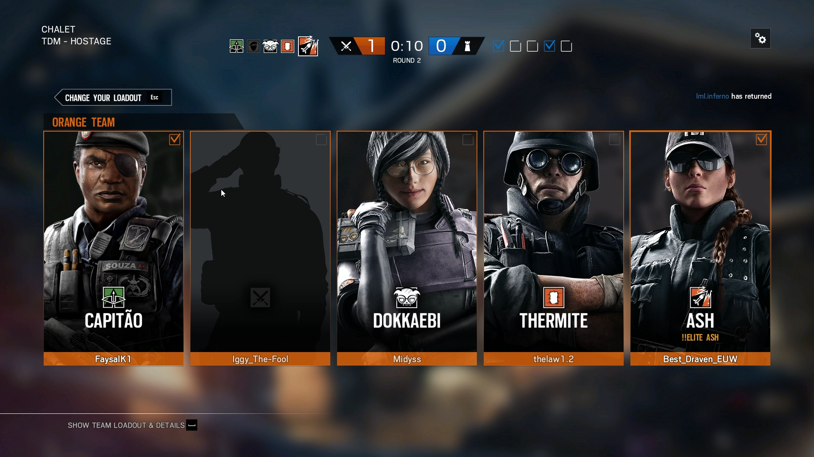
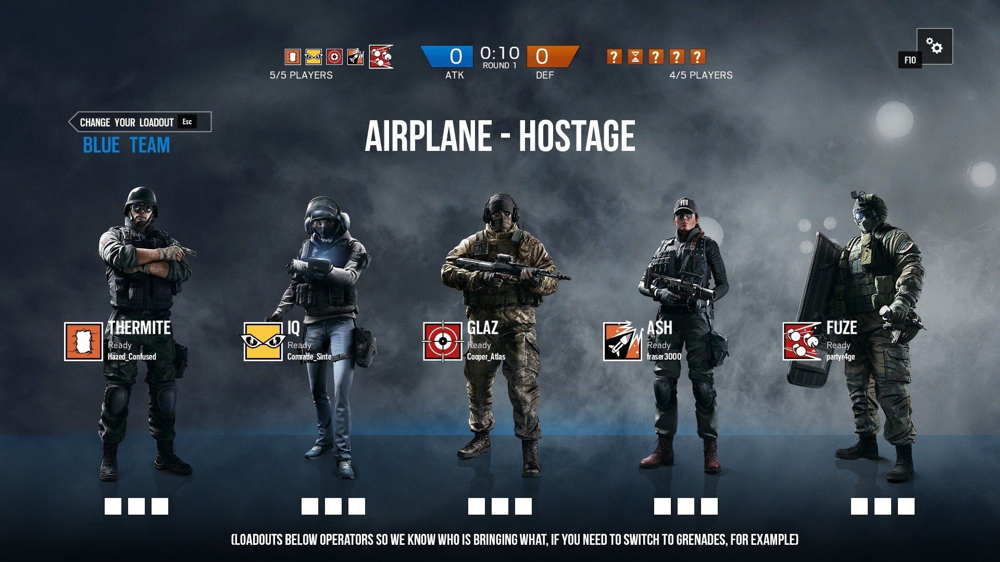

Gameplay
SIKe
How does Rainbow Six Siege work?
When the round begins in an online match, the attackers choose one of several spawn points from which to launch their attack while defenders do the same from which to defend from. A one-minute preparatory period will then commence wherein the attackers are then given control over mecanum-wheeled drones to scout the map in search of enemy operators, traps and defensive set-ups in addition to the target objective(s), while the opposition establishes their defences and tries to do so without having the defensive and target objective(s) details being discovered, chiefly through destroying the drones. Maps in the game are designed to encourage close quarters combat, and players cannot respawn until the end of a round. Players who were killed by opponents can enter "Support Mode", which allows them to gain access to drone's cameras and security cameras so that they can continue to contribute to their team by informing them of opponent locations and activities. Matches last only four minutes for a casual and three minutes for a ranked. Teamwork and cooperation are encouraged in Siege, and players need to take advantage of their different abilities in order to complete the objective and defeat the enemy team. Communication between players is also heavily encouraged. The game also has a spectator mode, which allows players to observe a match from different angles.
The game features a heavy emphasis on environmental destruction using a procedural destruction system. Players can break structures by planting explosives on them, or shoot walls to make bullet holes. Players may gain tactical advantages through environmental destruction, and the system aims at encouraging players to utilize creativity and strategy. A bullet-penetration system is featured, in which bullets that pass through structures deal less damage to enemies. In addition to destruction, players on the defending team can also set up a limited number of heavy-duty fortifications on walls and deployable shields around them for protection; these can be destroyed through breaching devices, explosives, or by utilizing operator specific gadgets in the case of the former. In order to stop attackers' advance, defenders can place traps like barbed-wire and explosive laser wire traps around the maps. Vertical space is a key gameplay element in the game's maps: players can destroy ceilings and floors using breach charges and can ambush enemies by rappelling through windows. Powerful weapons like grenades and breach charges are valuable, as only a limited amount can be used in a round.
What are "modes" and what are they?
At launch, the game featured 11 maps and 5 different gameplay modes spanning both PVE and PVP. With the downloadable content (DLC) released post-launch with an additional four maps from year one and three maps from year two – there are currently 20 playable maps. The gameplay modes featured include:
| Gameplay Modes | Details |
|---|---|
| Hostage | Hostage is a competitive multiplayer mode, in which the attackers must extract the hostage from the defenders, while the defenders must prevent that from happening either by eliminating all of the attacking team or successfully defending the hostage until the time expires. A secondary manner of winning can occur if the attacking or defending team accidentally damages the hostage, causing the hostage to "down"; if the opposing team can prevent the revival of the hostage, and the hostage bleeds-out and dies, they will win the round. |
| Bomb | Bomb a competitive multiplayer mode, in which the attackers are tasked with locating and defusing one of two bombs. The defenders must stop the attackers by killing all of them or destroying the defuser. If all attackers are killed after the defuser is planted, the defuser must still be destroyed for a defending victory. |
| Secure area | Secure Area is a competitive multiplayer mode, in which the defenders must protect a room with a biohazard container, while the attackers must fight their way in and secure it. The match ends when all players from one team are killed or the biohazard container is secured by the attackers when there are no defenders in the room. |
| Tactical Realism | Tactical Realism is a variation of the standard competitive multiplayer modes, added with the release of the Operation Skull Rain DLC. The game mode features a heavier emphasis on realism and teamwork, removing most of the heads-up display (HUD) elements, the ability to mark opponents, and the ability to see teammates' contours through walls, while also featuring the addition of a realistic ammo management system. This mode is no longer in the game but some aspects are in the other multiplayer modes. |
| Terrorist Hunt | Terrorist Hunt is a solo or cooperative multiplayer mode for up to five players. Players take on the role of either attackers or defenders, and must fight against waves of enemies controlled by artificial intelligence across various modes like Bomb, Hostage or Elimination (Terrorist hunt classic). |
| Situations | Situations is the game's most significant single-player component, with 10 solo and 1 co-op multiplayer missions that serve as introductory and interactive tutorials to the game's mechanics. |
| Outbreak | A limited time event exclusive to Operation Chimera, Outbreak pits a 3 player team in a co-op PVE environment against an extraterrestrial biohazard threat, namely AI-controlled heavily mutated forms of humans infected with said alien parasite. Two difficulties exists for this mode, for which the chief difference was the inclusion of friendly fire on the harder one. |